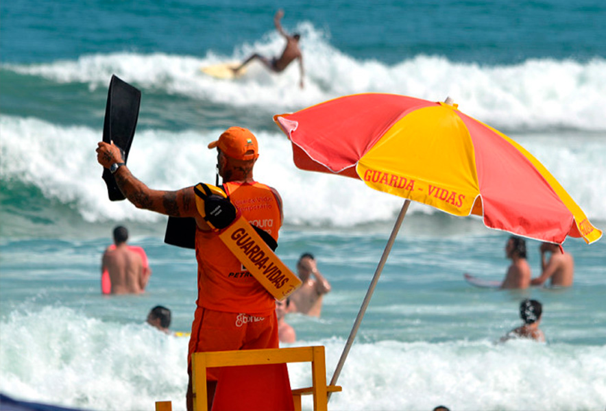

Processo Seletivo Guarda-Vidas Temporário Ubatuba 2025/2026
A Prefeitura da Estância Balneária de Ubatuba, em parceria com o Corpo de Bombeiros Marítimo, abriu processo seletivo para contratação de até 50 Auxiliares de Guarda-Vidas Temporários.

Cronograma
- Inscrições: 3 a 22 de junho de 2025
- Local da inscrição: Quartel do Corpo de Bombeiros – Rua Guanabara, 18 – Perequê-Açu, Ubatuba/SP
- Horário: das 8h às 17h30
- Exame Médico: 23 de junho de 2025
- Teste de Aptidão Física (TAF): 25 de junho de 2025 às 07h30
- Treinamento: 30/06 a 18/07/2025 (com carga horária diária e estágios)
Vagas e Cargos
- Total de vagas: 50
- Cargo: Auxiliar de Guarda-Vidas Temporário (AGVT)
- Regime: Contrato administrativo de 150 dias, prorrogável
Remuneração e Benefícios
- Salário: R$ 2.483,86
- Adicional de insalubridade: 20% sobre o salário mínimo
- Carga horária: Até 200 horas mensais
Etapas do Processo Seletivo
- Teste de Aptidão Física (eliminatório/classificatório)
- Corrida: 1.000m em até 8 minutos
- Natação: 200m em até 6 minutos
- Treinamento específico (classificatório)
- Aulas práticas e teóricas
- Provas teórica, técnica, física e disciplinares
- Investigação Social (eliminatória)
- Verificação de conduta, ficha criminal, ética e integridade moral
Requisitos
- Ser brasileiro e ter 18 anos ou mais
- Estar quites com o serviço militar (homens) e com a Justiça Eleitoral
- Boa saúde física e mental, comprovada
- Curso AGVT 2025/2026 concluído com habilitação do Corpo de Bombeiros
- Apresentar documentação obrigatória (RG, CPF, CTPS, título, comprovantes, fotos, etc.)
Critérios de Desempate
- Maior idade
- Maior número de dependentes
Mais Informações
Fique atento aos canais oficiais para acompanhar as atualizações e o edital: